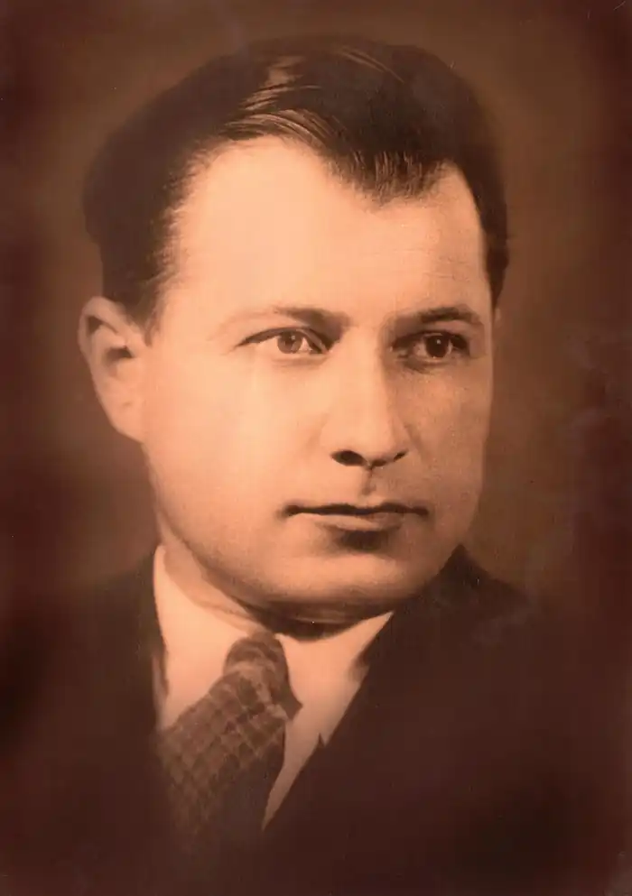

Леонід Смілянський
(1904 — 1966)
Леонід Смілянський прийшов у літературу в другій половині 20-х років, одразу приставши до ідейно-естетичних платформ ВУСППу і "Молодняка". Тож письменник не був вільним від тогочасних літературних стереотипів, пробував виводити "на чисту воду" буржуазних спеців, розвінчував непманів, художньо осмислював "реакційну суть дрібновласницької стихії". Усе це є в його першій збірці оповідань "Нові оселі" (1928). Тоді ж письменник почав освоювати "велику" прозу, написавши повість "Машиністи" (1927), присвячену складним подіям громадянської війни в Україні. На перевалі 20 — 30-х років творчою уявою Л. Смілянського повністю заволоділа ідея "жити комуною". Одна за одною пишуться повісті "Мехзавод" (1930), "Периферія" (1933), "Полонений" (1934), пізніше дописана і трансформована в роман "Зустрічі" (1935). Другим "масивом" творчості Л. Смілянського є проза про Велику Вітчизняну війну. За період з 1941 по 1950 рік він присвятив цій темі роман, п'ять повістей, ряд оповідань і новел, ставши чи не найпліднішим літописцем війни в 40-ві роки. Перші ж повісті — "Золоті ворота" і "Дума про Кравчиху" (1942) засвідчили, що прозаїк виразного реалістичного стилю вдався до лірико-романтичної манери письма. У "Золотих воротах" — своєрідному ліричному етюді — найперше приваблює щирість почуттів "я — героя", котрий став на захист рідного Києва. Але пунктирно окреслені характери героїв, як і "пунктирний" сюжет та очевидна приблизність фактажу, дещо знижують естетичну цінність повісті. Цілісніше враження справляє "Дума про Кравчиху", виразна патріотична ідейність якої досить органічно переплітається з народнопісенною символікою, "думністю", що допомогло авторові створити переконливий образ матері, в якому вміщуються поняття і жінки-матері, й матері-Вітчизни. У романі "Євшан-зілля" (1943) прозаїк знову повертається до реалістичного стилю художнього мислення і відображає боротьбу народних месників в окупованій фашистами Україні. Дослідники слушно вказували на вторинність деяких персонажів, надмірну белетризацію зображуваного. Лише недавно знято тавро забуття з повісті "Софія", яка була надрукована тільки в журнальному варіанті (Укр. літ. 1944. № 1). У центрі уваги автора повісті — представники української інтелігенції — архітектори, науковці, діячі культури, митці, які евакуювалися з України за Урал. Одним із могутніх життєдайних джерел у повісті виступає національна самосвідомість героїв, їхні поривання до рідної землі. Устами Софії письменник висловлює заповітну мрію, що після переможного завершення війни почнеться незрівнянно краще життя, ніж було до війни: "Зміняться наші серця, в наших поглядах і вимогах до життя станеться нове відродження". Ця думка-мрія в Л. Смілянського була вистражданою, не випадковою, бо суголосні їй зустрічаємо і в наступній воєнній повісті "Зеленогорський хрест" (1945), герой якої командир партизанської групи Григорій Ромашка переконаний, що після війни "інших людей родитиме земля і все кращих і кращих, наче пшеницю...". Повість "Сашко" (1950), популярна й досі серед школярів, стала останнім твором письменника про війну. Третій цикл творчості Л. Смілянського — історико-біографічна проза і драматургія. На відміну від попередніх двох — робітничого і воєнного — творився він у різні періоди письменницького життя. Історико-біографічна тема, починаючи від повісті "Михайло Коцюбинський" (1940), була для письменника своєрідним прихистом, певним відходом од немилосердної сучасності. Л. Смілянського привабили найбільші постаті в українському письменстві — Шевченко, Франко, Леся Українка, Коцюбинський. "Вічні огні вершин" — так називав їх автор. Характерним для творів було те, що письменник обирав для зображення невеликий, але вагомий часовий відтинок у житті України, такий, що давав змогу показати кожного з героїв митцем і громадянином. Водночас у цих творах маємо надмірну привнесеність ідеологічних, політичних акцентів у відтворенні як головних персонажів, так і оточення, особливо "ліберально-буржуазного". Найкращим твором письменника на історико-біографічну тему є роман у двох книгах "Поетова молодість" (кн. І — 1960, кн. II — 1963). Авторові пощастило органічно поєднати тут історичну фактологію з обгрунтованим і достовірним художнім домислом. Леонід Смілянський залишив по собі досить значну і нерівноцінну мистецьку спадщину. Його перу належать і кіносценарії та ціла низка зразків "малої" прози. В. Поліщук Історія української літератури ХХ ст. — Кн. 2. — К.: Либідь, 1998.